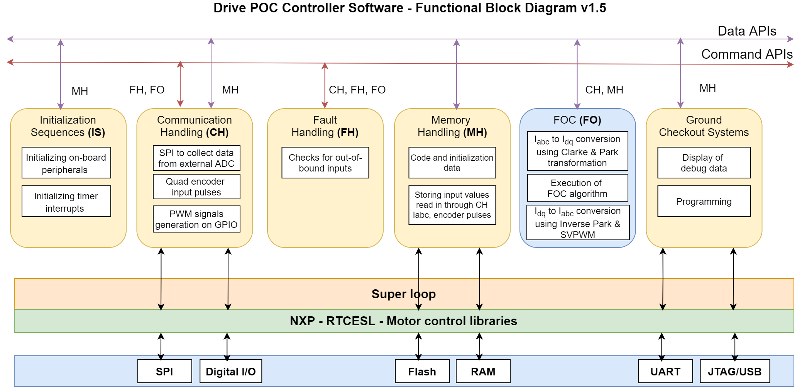

|
DrivePOCController Version no - 0.17.4
This project implements the V/F Control for ACIM in Open Loop
|
|
DrivePOCController Version no - 0.17.4
This project implements the V/F Control for ACIM in Open Loop
|
DrivePOCController_NXP + DrivePOCController Software
This a Embedded-C based software for AC Induction Motor Controller used in the POC version of the Drive project Implementation is done here by developing the V/F Control in Embedded-C on the NXP microcontroller using the evaluation board: FRDM-KV31F. NXP Controller FRDM-KV31F512VLL12 provides us with few of the Motor Controller libraries and they are used here for realization
Software used :- MCUXpresso IDE
Version of the software used :- V-3.0
SDK Version used :- 2.10.0
Version of the git commit :- V-0.17.4
Compiler Details :- GCC
Debugger Details :- OpenSDA with PEMicro Debugger
Date in which the documentation was made :- 28th July 2022
Documentation prepared by :- Sangeerth
People Involved in the project :- Sreedhar Mahadevan, Sangeerth P
Software architecture V-1.5- Block diagram aiding for better understanding:

The software implementation is split across the following files:
The DrivePOC_CommHandler has the functions that are associated with Communication of the NXP Microcontroller through its peripherals to the external world.
DrivePOC_CommHandler.c && DrivePOC_CommHandler.h
The DrivePOC_MemHandler has the functions that are associated with storing the values of data collected from the external world Here the MCU collects data from ADS Board to measure stator current, DC Bus current, DC Bus Voltage and stator voltages
DrivePOC_MemHandler.c && DrivePOC_MemHandler.h
The DrivePOC_Control_Loop has the functions associated with the V/f Algorithm Implementation for Acceleration, Steady State and Deceleration phase
DrivePOC_Control_Loop.c && DrivePOC_Control_Loop.h
The DrivePOC_Controller_NXP has the main function and the PIT Interrupt functions to schedule the actions in a timed fashion
DrivePOC_Controller_NXP.c && DrivePOC_Controller_NXP.h
The DrivePOC_FaultHandler has the functions associated with the fault handling. For now, the fault is handled by disabling the PWM. Later on, based on ECU demands this file have to be modified.
DrivePOC_FaultHandler.c && DrivePOC_FaultHandler.h
The Drive_Parameters has the Parameters of the LOX Motor-V1.5.1, Sensor data(assumed-V1.0), Mosfet Data(taken from SiC Mosfet Datasheet)
Drive_Parameters.h
The DrivePOC_Common_Header contains the structures and other datatypes that will be shared accross files.
DrivePOC_Common_Header.h